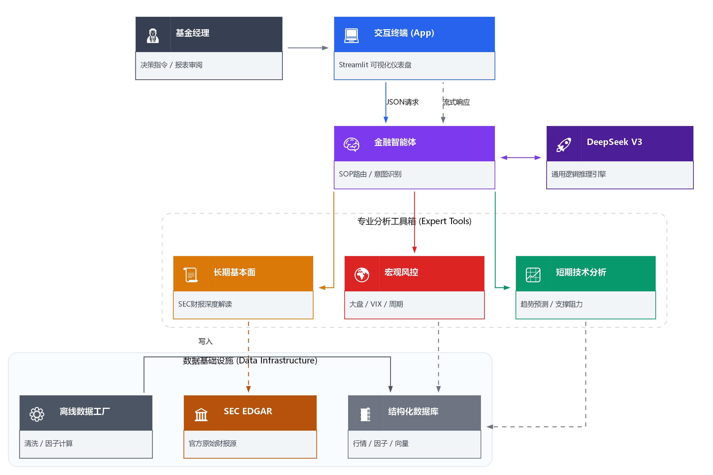

传统的金融数据挖掘往往止步于"预测数值"。利用 LLM 驱动的智能体模式，我们能够在充满噪音的市场中，实现从"数据"到"决策"的质变。
金融市场充斥着噪音。LLM Agent 能够理解用户的自然语言查询（如"长期价值" vs "短期套利"），动态调整关注点，仅提取与意图相关的高价值信息，而非盲目罗列指标。
解决了 LLM "数学差、有幻觉" 的痛点。系统将逻辑推理（左脑）与精密量化计算（右脑）解耦。LLM 负责规划路径，专用工具负责数值计算，确保了分析的严谨性与灵活性。
不仅仅是看K线。Agent 能够综合处理结构化数据（财报、行情）和非结构化数据（新闻情感），并进行"交叉验证"，发现技术面与基本面的背离，挖掘深层 Alpha。
本项目构建了一个基于标准化作业流程 (SOP) 的智能体架构。通过 DeepSeek V3 作为推理核心，调度下游专业的量化工具库。

系统逻辑架构图
为了解决单一模态数据的局限性，我们设计了一个 Hybrid Multitask Model。该模型并行处理时序行情数据与新闻语义特征，通过注意力机制动态捕捉市场异动。
Query: LSTM | Key/Value: Text
"动态调节不同市场环境下新闻的权重"
模型并非简单拼接特征。Temporal Tower (LSTM) 负责处理经 VIF 筛选的 18 个高频量化因子（如 ATR, MACD），捕捉市场微观结构；Text Tower (Transformer) 则处理 FinBERT 生成的新闻向量，捕捉宏观语义。
这是模型的核心创新。通过 alpha * Attn + (1-alpha) * LSTM 公式，模型能"自主决定"在当前时刻是更信任技术指标，还是更信任突发新闻。
单一预测往往过拟合。我们强迫模型同时学习"涨跌方向"和"波动幅度"。共享层的设计使得两个任务相互正则化，提升了泛化能力。
* DA (方向准确率) 显著优于随机猜测 (50%)，表明模型有效捕捉了市场短期动能。
真正的 Alpha 往往隐藏在财报的细节中。我们开发了基于 SEC 官方 API 的分析工具，让 Agent 具备了"读懂"公司家底的能力。
直连 SEC EDGAR 系统，提取 10-K 年报中的 XBRL 原始数据，拒绝二手数据的误差。
工具自动提取三大报表核心数据（Key Metrics），并计算关键比率（如流动比率、负债权益比），提供"原始数据+分析师观点"的双层输出。
Agent 能够基于此生成专业的财务健康度评级，判断公司护城河与现金流造血能力。
def analyze_latest_filings(self, ticker):
# 1. Fetch raw XBRL from SEC
cik = get_cik(ticker)
facts = get_company_facts(cik)
# 2. Extract & Compute Ratios
net_income = extract(facts, "NetIncomeLoss")
ocf = extract(facts, "OperatingCashFlow")
quality_ratio = ocf / net_income
# 3. Generate Analyst Take
return {
"rating": "Excellent",
"analysis": f"现金流充裕(Ratio={quality_ratio})..."
}